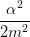

| Up | Next | Prev | PrevTail | Tail |
We give here as an example of a simple calculation in high energy physics the computation of the Compton scattering cross-section as given in Bjorken and Drell Eqs. (7.72) through (7.74). We wish to compute the trace of
where ki and kf are the four-momenta of incoming and outgoing photons (with polarization vectors e and e′ and laboratory energies k and k′ respectively) and pi, pf are incident and final electron four-momenta.
Omitting therefore an overall factor 2 we need to find one quarter of the trace of
A straightforward REDUCE program for this, with appropriate substitutions (using P1 for pi, PF for pf, KI for ki and KF for kf) is
(We use P1 instead of PI in the above to avoid confusion with the reserved variable PI).
This program will print the following result
| Up | Next | Prev | PrevTail | Front |